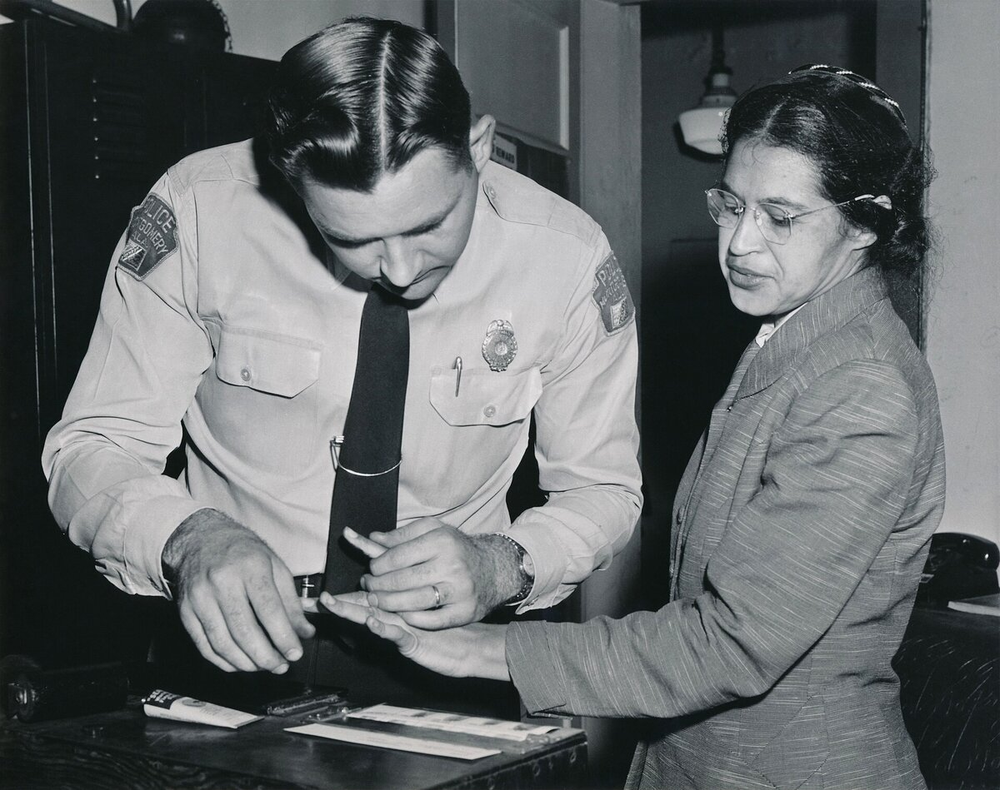
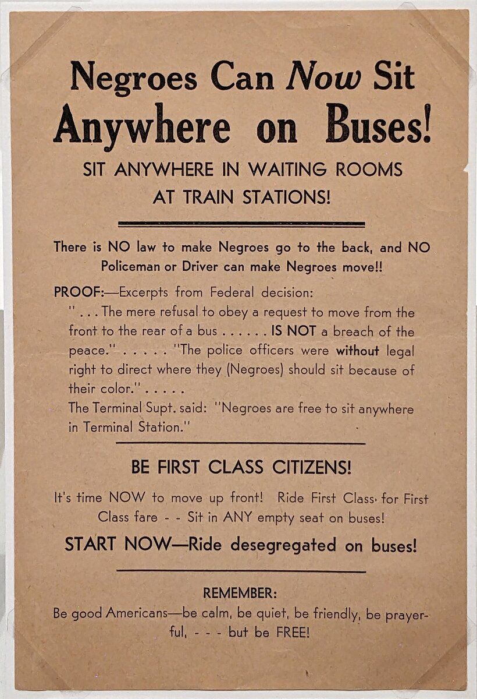
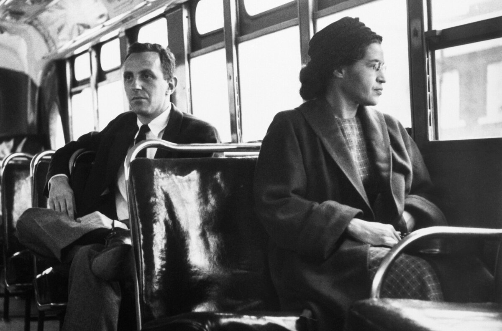

C1 · American History
Rosa Parks and the Montgomery Bus Boycott
The story says a tired seamstress refused to move. She was a trained organizer, and the refusal was the least remarkable thing about what followed.
Play the audio and follow along, then read it again on your own. Tap or hover over a highlighted word to see what it means.
The version most people know is short enough to fit on a poster: a tired seamstress, on her way home from work, refused to give up her seat, and a movement began. Almost every element of it is misleading, and the accurate version is considerably more interesting.
Rosa Parks was forty-two, and she was tired in the specific sense she later described — tired of giving in. She had been secretary of the Montgomery branch of the NAACP for twelve years, work that involved documenting cases of violence against Black residents of Alabama, including sexual assaults that no local court would hear. A few months before her arrest she had spent two weeks at the Highlander Folk School in Tennessee, at a workshop on desegregation. She was not a bystander who happened to be in the wrong seat; she was an experienced organizer who knew exactly what the law was and what refusing it would cost.
She was also not the first. Claudette Colvin, fifteen years old, had been arrested in Montgomery nine months earlier for refusing the same demand, and two other women had been arrested in similar circumstances. Local leaders had considered building a legal challenge around Colvin and decided against it, partly because she was young and pregnant and they judged that a prosecutor would destroy her in public. That calculation — the search for a case that would survive scrutiny — is itself a reminder that this was organized work rather than spontaneous outrage.
The arrest on 1 December 1955 was the moment that calculation found its case. Within four days, the Women's Political Council had printed and distributed something like fifty thousand leaflets, and Black Montgomery stayed off the buses on the Monday. That evening a mass meeting voted to continue, and a new organization, the Montgomery Improvement Association, chose as its president a twenty-six-year-old minister who had been in the city barely a year: Martin Luther King Jr. He was chosen in part because he was new enough to have no local enemies.

What followed was not a gesture but a logistical operation that lasted 381 days. Roughly forty thousand people needed to get to work. Black-owned taxi companies charged bus fare until the city made that illegal; a car pool was then organized with some three hundred vehicles, dispatch points, schedules and volunteer drivers, and it ran six days a week for over a year. Insurance companies canceled the policies on the pool cars until a broker in London agreed to cover them. Many people simply walked, in some cases several miles each way.
The response from the city was systematic. Drivers of the car pool were arrested for minor traffic offenses in large numbers. King's house was bombed. More than eighty boycott leaders were indicted under an old anti-boycott statute, which produced exactly the national press coverage the prosecution had not wanted.
It is worth being precise about how the boycott ended, because the popular account compresses it. The buses were not desegregated by the boycott itself but by Browder v. Gayle, a federal case brought on behalf of four women — Aurelia Browder, Susie McDonald, Claudette Colvin and Mary Louise Smith — which held Alabama's bus segregation laws unconstitutional. The Supreme Court affirmed that ruling in November 1956, and the boycott ended when the written order reached Montgomery on 20 December. The boycott created the pressure, the public attention and the organization; the court delivered the legal result. Neither would have been sufficient alone.

Parks herself paid for it in the ordinary, unspectacular way that activists usually do. She lost her job at the department store. Her husband lost his. They received threatening telephone calls for years, and in 1957 they left Alabama for Detroit, where she worked in a congressman's office and lived modestly for decades.

The flattening of her story into a single tired moment was not accidental. A spontaneous refusal is comfortable: it suggests that justice arrives when an individual finally has enough. An organizer with twelve years of training, a legal strategy, a communications network and a transport system is a different kind of story, because it implies that this sort of change is available to anyone willing to do that amount of work — and that it is extremely hard work.
Key Vocabulary
- a seamstress a woman whose job is sewing
- a bystander a person who is present but not involved
- scrutiny close and critical examination
- a leaflet a printed sheet distributed to many people
- a car pool an organized arrangement for sharing cars between many passengers
- a policy a course of action an institution has decided on — careful: nothing to do with the police
- to indict to charge somebody formally with a crime
- a statute a written law passed by a legislature
- to affirm (of a higher court) to uphold a lower court's decision
- ordinary normal, usual — careful: it is not an insult
Rosa Parks and the Montgomery Bus Boycott — C1 · American History · Renan the Teacher, English Language Academy · https://renangrossi.github.io/englishclasses/reading/c1/rosa-parks.html
Interactive Exercises
Practice
Complete each exercise, then click Submit to see your score and an explanation for every answer.
Speaking & Writing
Discussion
There are no right answers here — use these to practice speaking, or write a short answer to each.
- Why do movements so often get remembered through one individual rather than through their organization?
- The leaders chose their test case carefully rather than taking the first one available. Is that strategic or unfair to the people passed over?
- The text separates the boycott from the court ruling. What does each one contribute that the other cannot?